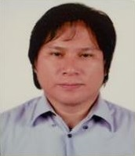

Bryan R. Oribiada
Computer Programmer
Educational Attainment
- Education 1: Colegio de Sta. Monica de Angat (CSMA) Angat, Bulacan
- Education 2: Colegio de Sta. Monica de Angat (CSMA) Angat, Bulacan
- Education 3: AMA Aclc Lagro, Quezon City ( Computer System Design and Programming CSDP ) Undergraduate 2001~2002
- Education 3: AMA Aclc Lagro, Quezon City ( Computer System and Network Technology CSNT ) Graduate 2012~2014
Work Experience
- @ Lineplus Corporation / South Korea 2007.3.20 – 2011.11.27
Machine Operator ( Manufacturing Product and controlling automatic machine. Creating a products such as Permanent marker, ballpen,, highlighter etc.)
- @ (JU) SLP / South Korea 2014.8.27 – 2015.09.01
Production Helper ( Manufacture of chemicals and chemical products. Creating and repacking of plastic granules )
- @Nobel Automotive Korea / South Korea 2015.10.07 – 2017.11.01
Machine Operator ( Manufacture of motor vehicles trailers and semitrailers. Steaming and bending of a tube such as Gas and oil tube of automotive car )
- @KeumHo Conveyor Co.,LTD. / South Korea 2018.5.31 – 2019.5.24
Machine Operator ( Manufacture of other machinery and Equipment. Creating Conveyors and Rollers )
Skills
- Computer Networking and Installation
- Troubleshooting and Formating System unit
- Software and program Installation
Language: Tagalog, English, korean
Learning And Development (L&D) Intervention / Trainings Attended
- Korean Language Course ( Sept.25 – October 5, 2006 ) 80 Hours
@ GLOBAL TECHNOLOGY TRADE TEST and TRAINING CENTER, INC. 956 Aragon St., Malate, Manila
- Pre-Employment Training for the Korean Employment Permit System (PKEPS) ( Feb. 19 – 26, 2007 ) 30 Hours
@ Occupational Safety and Health Center (OSHC) North Avenue corner Agham Road
Diliman, Quezon City
- National Certificate II ( NCII ) in Computer Hardware Servicing ( CHS ) Issued on Feb. 24, 2014 @ TESDA